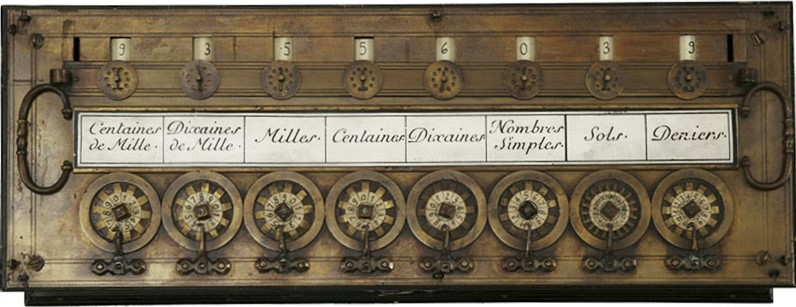
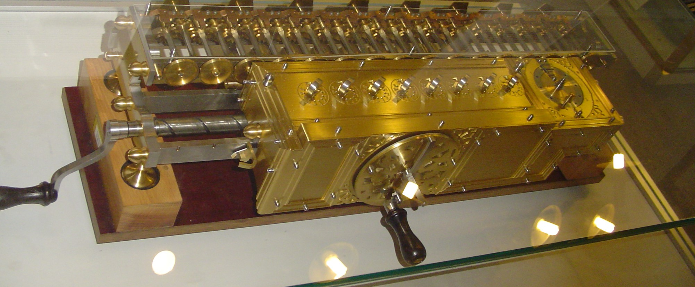
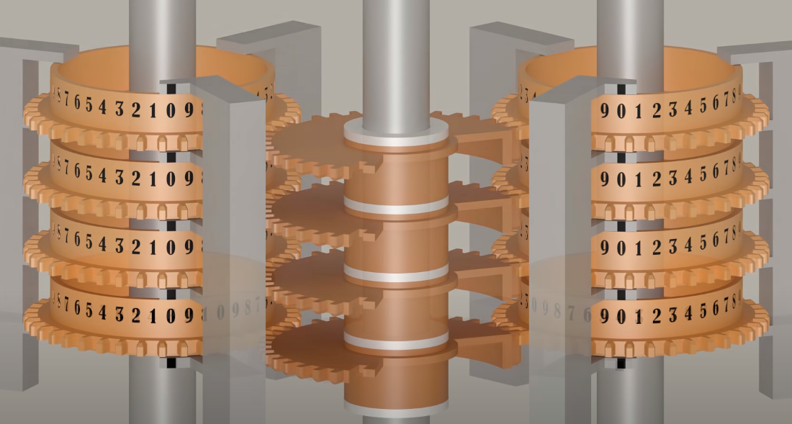
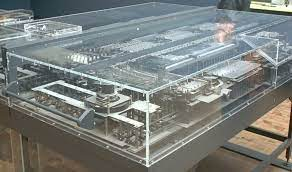
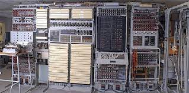
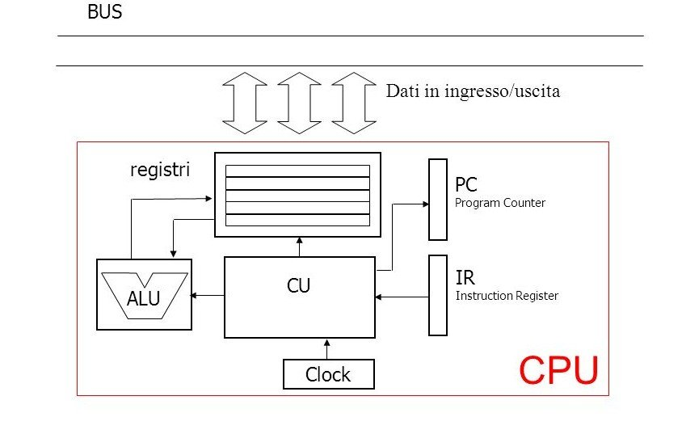
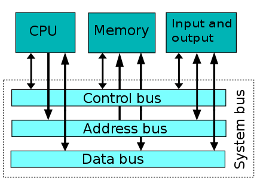

1642 "PASCALINA" -> Calcolatrice Meccanica per Somme Algebriche
 Interamente meccanica, azionabile a mano tramite manovella... PASCALINA-WIKI
1672 "Stepped Reckoner" Calcolatrice Meccanica per Somme Algebriche e Prodotti/Divisioni

LEIBNIZ-WIKI
Accumulatore 16 cifre decimali
Input 8 cifre decimali
Moltiplicatore: è una manovella che seleziona il numero di volte da eseguire l'operazione
Somma algebrica tra 16 cifre e 8 cifre
Prodotto (max 16 cifre) di 2 numeri a 8 cifre
Divisione tra 16 e 8 cifre
1834 "Macchina Differenziale" di Babbage

N colonne da 32 cifre, con virgola mobile
MILL: a ogni ciclo (360°) compie una operazione
N(n) = N(n) + N(n+1)
N(n+1) è il sommatore. Viene rigenerato dopo l'operazione
"Macchina Analitica" -> differente dalla differenziale perchè programmabile. Era possibile mediante schede di input selezionare il tipo di operazione da andare a svolgere.
1936 Z1 di Kondrad Zuse

Prima Calcolatrice a relè elettromagnetici.
Zuse Z1
Operandi a 22 bit in virgola mobile
Somme Algebriche e Prodotti
Memoria da 64 word (22bit)
Gli algoritmi NON risiedono in memoria
Generazione 1 (1945 - 1955) - Valvole
1940 Colossus di Alan Turing

Usata per decodificare i messaggi tedeschi di EnigmaColossus
Operazioni booleane tra 2 flussi
Flusso = messaggio
Compara i 2 flussi, il primo cifrato e il secondo calcolato dalla macchina stessa con una chiave
1946 ENIAC di Mauchly
Usava le valvole termoioniche, le quali si fondevano in caso di temperature troppo elevateENIAC
Macchina binaria che però opera con numeri decimali
Memoria Flip-Flop 20 numeri da 10 cifre
Input = schede perforate, come le macchine precedenti
Operazione di radice quadrata
LOOP, Branch e Subroutine
1951 Macchina di Von Neumann


Primo modello di calcolatore su cui si basano le moderne architettureFunzionamento Architettura